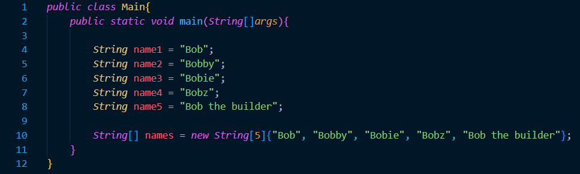

Arrays
Prerequisite Knowledge and Terms
Before proceeding with this tutorial, make sure you are familiar with the following concepts:- A basic understanding of variables, primitive data types and objects.
- Familiarity with forms of iteration such as 'for loops' and 'while loops.'
- Element: A specific value inside an array.
- Index: A 0 based positioning system that determines the positions of specific elements inside an array.
- Array length: the number of elements inside the array. Once the array length is determined, it cannot be changed.
Introduction
Arrays are data structures that are used to implement a list of primative or object reference data. Arrays help simplify the creation and usage of multiple variables of the same data type that are intended to be used for the same purpose.Take the following code as an example. Instead of creating 5 variables that each represent the name of a student, we can create an array of 5 elements that hold the names of each of the students. Using arrays allow us to access variables of similar data purpose using only one identifier.

The previous example demonstrated one way of creating an array. It both declared and initalized the array in one step. Another way of creating an array is by first declaring the array, then later initializing it with values. This is useful in object oriented programming because normally arrays are declared at the top of the class and is intialized in the country or in a method (E.i, mutator method). Below is a demonstration of creating an array in a class.
image details: rwar
1D Array Example
- We use square brackets, [ ], to access and modify specific elements in an array- Arrays can also hold objects, not just primitive data types.
- All elements in an array of objects will be initialized as ********null********.
- Type int arrays will initialize to 0
- Type double arrays will initialize to 0.0
- Type Boolean arrays will initialize to false
- When using arrays, be careful about throwing the ArrayIndexOutOfBoundsException.
- You get this runtime error when your program tries to access an element of a certain index that is not within the range of the array.
- The range of an array starts from 0, all the way to one less than the length of the array (inclusive).
2D Array Example
- Example:
public class Main{
}
Additional Takeaways
- !@#$%^*()- !@#$%^*()
- !@#$%^*()